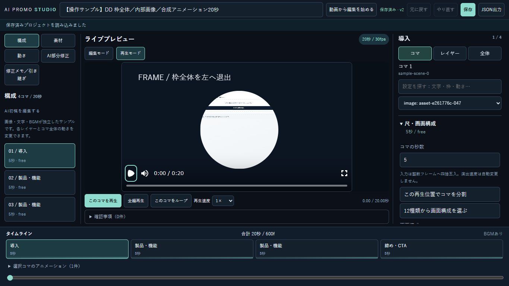

操作を探せるガイド · 2026.11.14
やりたい操作から、
編集場所が見つかります。
現在の編集アプリの表示名と操作経路をもとに、検索できる形で整理しました。検索結果には対象条件・変更範囲・保存方法・対応状況を表示します。
「文字を真ん中に」のような普段の言い方や、画面に出る名称でも探せます。
よく使う操作
目的を選ぶと、操作手順が右側に開きます。
操作を検索
画面の場所から探す
実画面の例を見ながら、該当する操作を開けます。

用語と、似ていて違う操作
場所と対象が違う操作は別々に扱っています。
現在の対応範囲
プレビューできることと、完成動画を書き出せることは別です。
確認日：2026年11月14日。表示条件と手順は、現在のローカルアプリのソースとブラウザー操作を照合して更新しています。